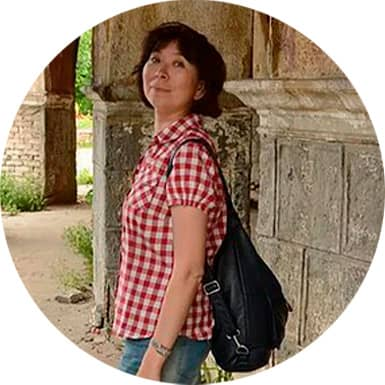
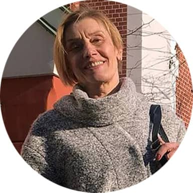

Твоя М осква
Бесплатные
пешеходные экскурсии
Наша команда
Наш клуб собрал людей, увлеченных своим призванием - знакомить слушателей с любимым городом, вдохновлять и объединять любовью к Москве. Кроме того, все наши экскурсоводы аккредитованы экспертным советом при Комитете по туризму города Москвы, так что в их профессиональных качествах можно быть уверенными. Мы создали наш клуб в марте 2018 года, и за прошедшее время, по данным сервиса Timepad.ru, на наших экскурсиях побывало 15204 человек.
Мы устроим для вас интересную прогулку, покажем самые красивые и любопытные места города. С нами вы узнаете новые и яркие факты, необычные истории, откроете для себя заповедные уголки и старинные дворянские усадьбы.
С нами столица станет действительно Твоей Москвой.
-
Актуальные маршруты:
- Легенды и были Царицыно
- История московской торговли
- Где тополи на Плющихе?
- Иноземцы в Москве
- Вдоль по улице Просвещения
- Созвездие Трех вокзалов
- Киевский вокзал+башня
- Курский вокзал - загадка стеклянного фасада
Денис Карелин - аккредитованный гид-экскурсовод
"Москва - город разноплановый и этим он и хорош. Потому что проходя по улицам и переулкам, мы можем прочесть ее более чем восьмивековую историю. Москва полна загадок, легенд и преданий. Я приглашаю вас на свои экскурсии, давайте попробуем вместе раскрыть все московские тайны".
-

Актуальные маршруты:
- Коломенское: от Тишайшего до Великого
- Симонов монастырь \5 конструктивизм
- Улица гурманов
- Чудо-остров в Измайлово
- Большой театр снаружи и изнутри
- Казанский вокзал и его создатель: Алексей Щусев
- Авангардная Шаболовка
Татьяна Ивлиева - аккредитованный гид-экскурсовод
"Наш город - это волшебная шкатулка, полная удивительных историй, настоящих сокровищ, которые можно изучать всю жизнь. А в компании единомышленников, людей, столь же увлеченных историей и архитектурой родного города, это интересней вдвойне".
-
Актуальные маршруты:
- Осколки Садового кольца
- По Гончарной слободе
- От "Трубы" до МУРа
- Тайны Земляного города
- Городки на Пироговке
- Загадка Л.НЛ.
- Динамо и окрестности : не только футбол
- По Новой Басманной в гости к Василию Львовичу Пушкину
Ирина Кальвина - аккредитованный гид-экскурсовод
"В архитектуре и планировке Москвы отражается наша история, наш характер. Не один раз наш город пробовали перестраивать, перекраивать, заключить в рамки, ограничить, и до конца ни у кого это сделать не получилось. Так и возникла эта пестрая и веселая, надоевшая и любимая путаница захолустных переулков, автострад и глухих упиков, парков и пустырей, где можно бесконечно рыться как в бабушкиной шкатулке и всегда найти что-то новое, еще никогда невиданное!"
-
Актуальные маршруты:
- Моя Садовая-Сухаревская
- Москва советская : Проспект Мира
- Дома и судьбы Никитского бульвара
- От Покровских до Яузских ворот
- Москва Владимира Высоцкого и Глеба Жеглова
- По Зарядью, по Варварке
- Миуссы и окрестности
Анна Котомкина - аккредитованный гид-экскурсовод
"Любимые темы: Москва 30-50-х годов, архитектура и быт того времени. Больше всего люблю довоенные дома. Любимые места: Садовая-Сухаревская и вокруг, Садовое кольцо, Проспект Мира, Ленинградский проспект и многое другое. Собираюсь и дальше создавать и водить экскурсии по своим любимым темам, с удовольствием изучаю сама и показываю другим все красивые и необычные здания на пути. Политикой не занимаюсь".
-

Актуальные маршруты:
- Москва Маяковского
- Страсти века на Страстном бульваре
- Московские адреса Сергея Есенина
Ирина Мамонтова - филолог, экскурсовод, лектор-просветитель
"В 1977 году закончила филологический факультет МГУ им. М.В. Ломоносова. 1969 по 1991 годы являлась научным сотрудником Государственного музея В. В. Маяковского, где вела экскурсии, читала лекции и создавала экспозиции. Встречалась по работе со многими современниками Маяковского, в том числе с Лилей Брик. После работы в музее многие годы преподавала русский язык и литературу в школе".